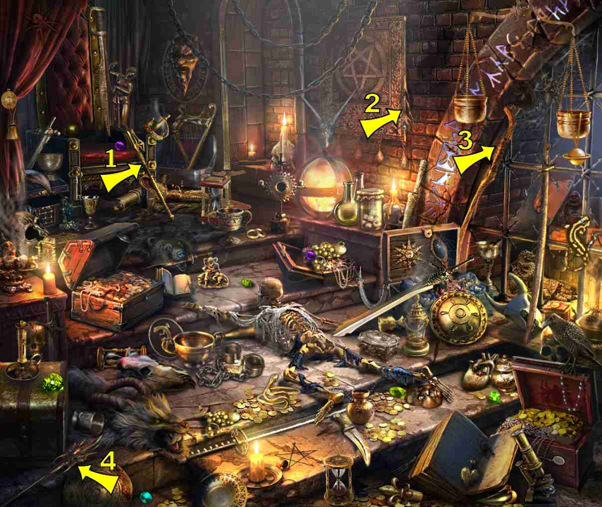
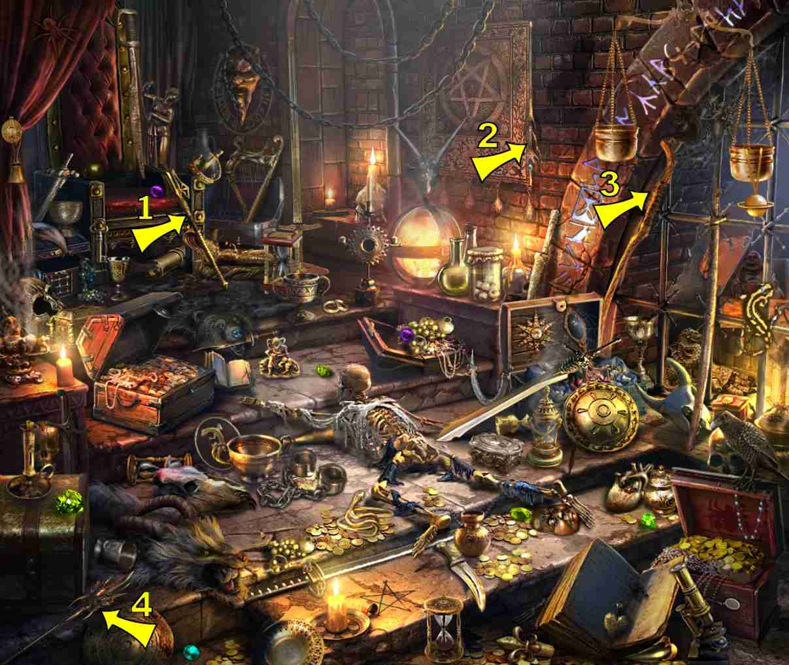
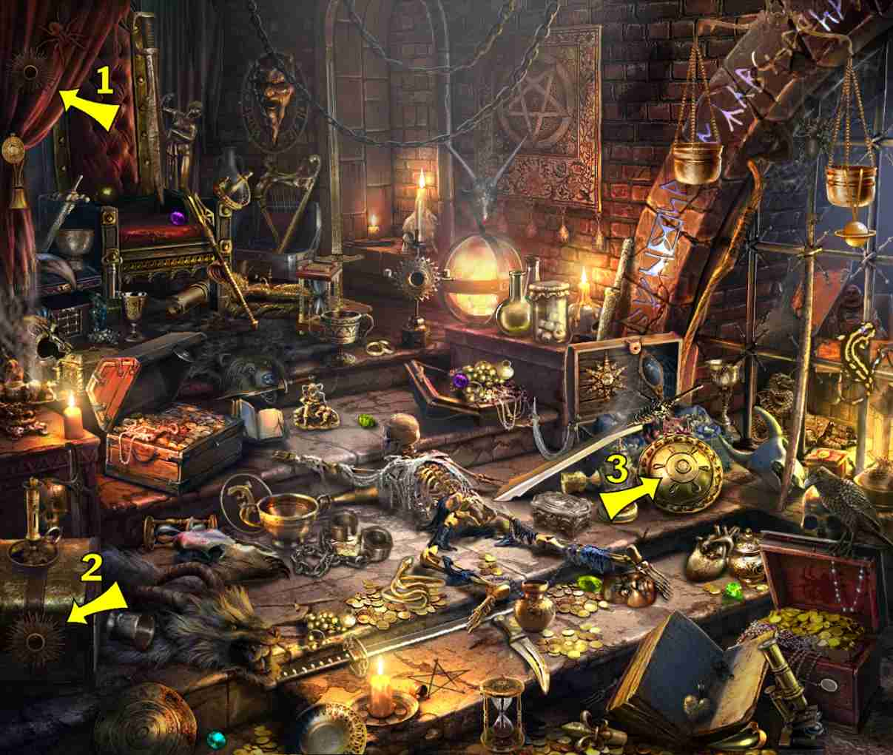
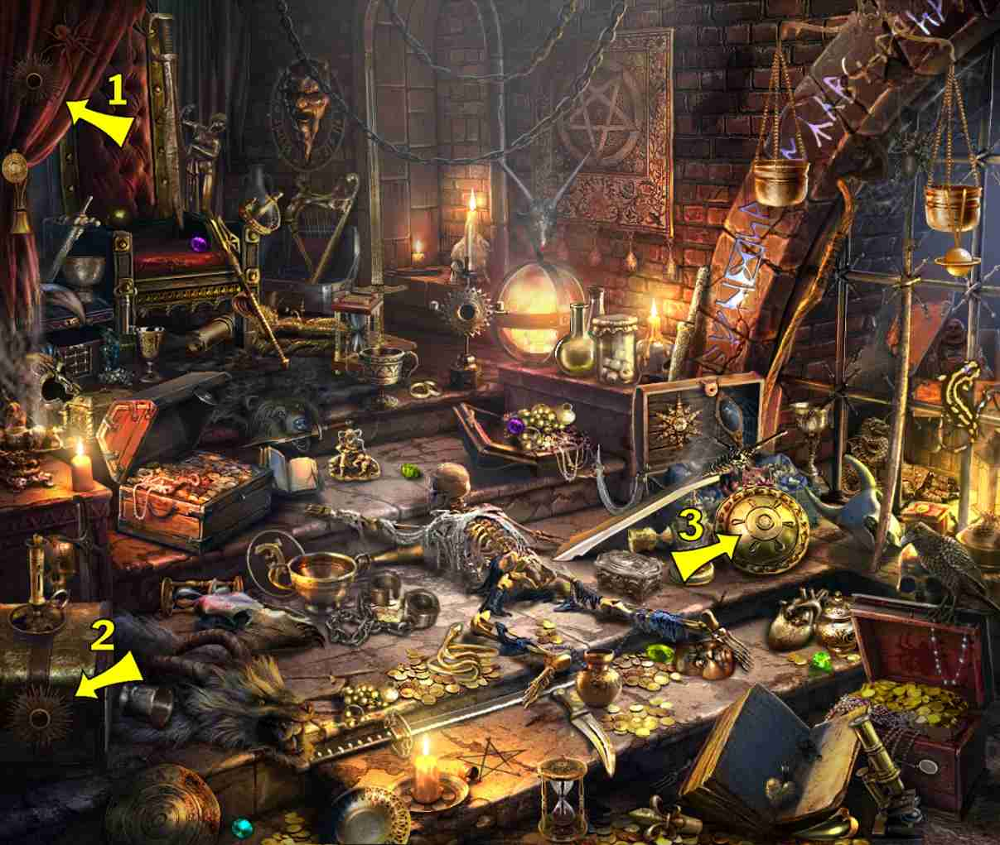

5 items:
- By prone skeleton's left side - long tall cup/goblet, dull brown color
- To left of open treasure box middle step right of scene (small goblet)
- Left leg of throne - wine goblet
- To lower right of throne - trophy cup, two handles
- Golden cup/goblet on the left side of the alcove behind the bars

5 items:
- Right foreground on the lid of the chest

3 items:
- On front edge of right chest where the star is found (hard to see)
5 items:
- On top step below alcove, left background
- Right side of closed chest in foreground, lower left of scene (small silver cup)
- Step from bottom, left/center, just in front of next step's edge
- On the stool on the left side of the throne
- Looks like a gold bowl that the human heart is laying in

5 items:
- Drawn on the wall of alcove to the right of the throne
- Engraved into the window trim near top where the scales hang

5 items:
- Lower right corner, in the treasure box
2 items:
- Hanging from astrolabe, center background
 

 
